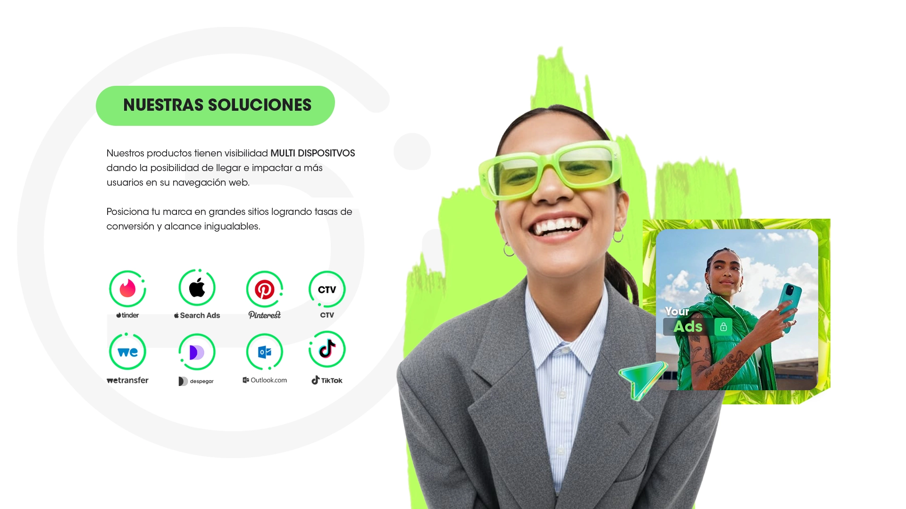

Agencia Marketing - DKS
Desarrollo de marca para una agencia de marketing digital con presencia en Chile y Latinoamérica. Abordamos el proyecto desde una reestructuración integral, definiendo un nuevo concepto estratégico y refrescando su identidad visual para proyectar juventud, personalidad y una presencia sólida y coherente con el entorno digital.
View Project